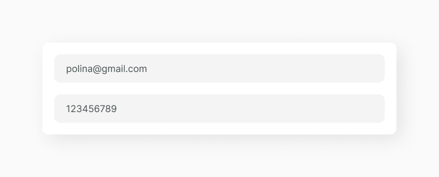
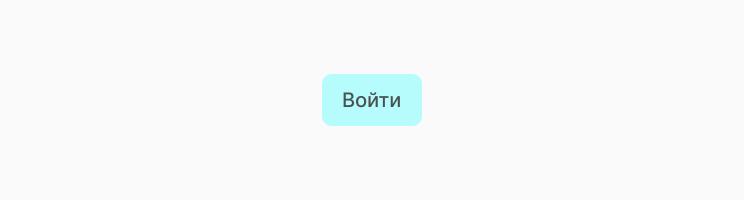
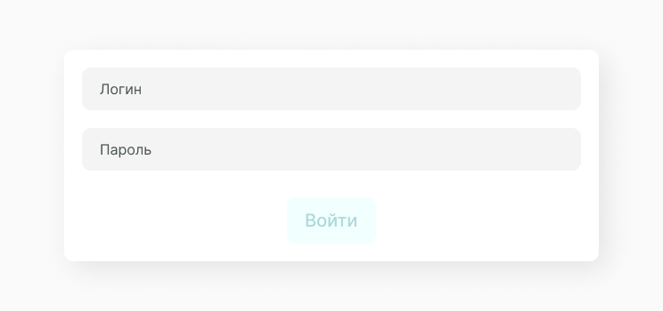
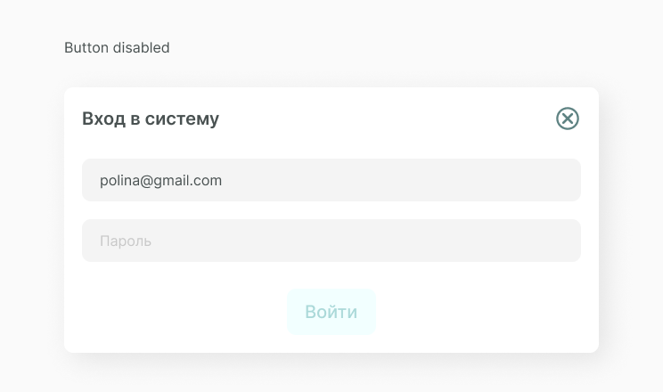
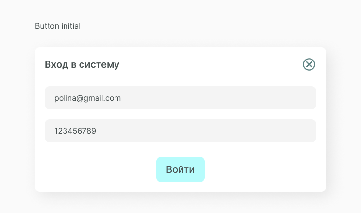
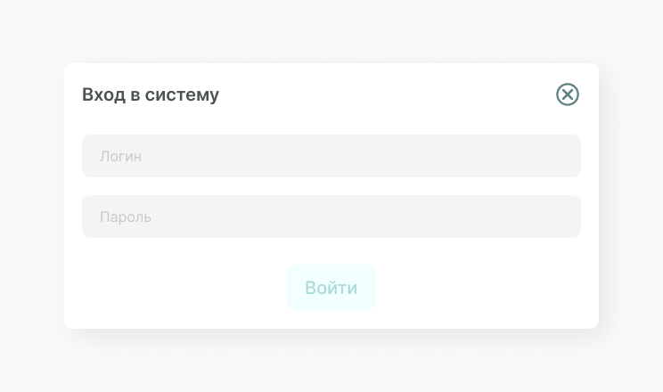

SingIn
SingIn – это основа любого пользовательского приложния. Как в alert проектируем sing in как наполнение для большего компонента popup. Мы решили показать как можно использовать компоненты вместе.
Структура компонента
В основном компонент состоит из двух input и кнопки входа (опционально кнопок может быть две, для входа и для перехода к окну регистрации).
Input
Элемент input является основным элементом формы (HTML тег <form>) и определяет интерактивное поле для ввода информации.
Button
Кнопки передают действия, которые пользователи могут применять.Кнопки должны указывать на то, что они могут инициировать действие, их состояние должно быть чётким, а также их должно быть легко найти среди других элементов интерфейса. Подробнее про кнопки button.
Вот как выглядит sing in у нас.
Состояние компонента
При проектировании этого компонента нужно учитывать состояния эементов из которых он состояит.
Также к состояниям относится и неактивность кнопки в случае, когда одно или несколько полей для ввода данных не заполнено.
 Реализация
Для начала в папке спроекта создаем новую, в неё кладем файлы O_SingIn.jsx и O_SingIn.css. Затем описываем функционал. Необходимо принимать при на жатии на кнопку введенные данные, в нашем случае выводим их в console. Получаем следующий код.
import React, { Component } from 'react'
import A_Input from '../../atoms/A_Input/A_Input.jsx'
import A_Button from '../../atoms/A_Button/A_Button.jsx'
import './O_Login.css'
export default class O_Login extends Component {
constructor(props) {
super(props)
this.state = {
login: '',
password: ''
}
this.handleLoginChange = this.handleLoginChange.bind(this)
this.handlePasswordChange = this.handlePasswordChange.bind(this)
this.handleButtonClick = this.handleButtonClick.bind(this)
}
handleLoginChange(e) {
const value = e.target.value
this.setState((prevState) => ({
...prevState,
login: value
}))
}
handlePasswordChange(e) {
const value = e.target.value
this.setState((prevState) => ({
...prevState,
password: value
}))
}
handleButtonClick() {
console.log('login: ', this.state.login)
console.log('password: ', this.state.password)
}
canClickButton() {
const { login, password } = this.state
return login && password
}
render() {
const { login, password } = this.state
return (
<div className="W_LoginContainer">
<A_Input
placeholder="Логин"
value={login}
onChange={this.handleLoginChange}
/>
<A_Input
placeholder="Пароль"
value={password}
onChange={this.handlePasswordChange}
/>
<A_Button
text="Войти"
handleClick={this.handleButtonClick}
disabled={!this.canClickButton()}
/>
</div>
)
}
}Затем, в файле O_SingIn.css прописываем стили для O_SingIn.
.W_LoginContainer {
width: 570px;
height: 100%;
display: flex;
flex-direction: column;
align-items: center;
justify-content: space-around;
}
.W_LoginContainer .A_InputContainer {
width: 570px;
background-color: #f4f4f4;
box-shadow: none;
}
.W_LoginContainer .A_InputContainer .A_Input {
background-color: #f4f4f4;
}Мы создали компонет, но описали только его функционал, теперь его нужно отрендерить. Можешь вывести компонент в своем файде сборщика, но не забудь про обертку popup. Вот как это делаем мы sing in.
import React from 'react'
import ReactDOM from 'react-dom'
import S_Popup from '../../components/superorganisms/S_Popup/S_Popup.jsx'
import O_Login from '../../components/organisms/O_Login/O_Login.jsx'
document.addEventListener('DOMContentLoaded', () => {
ReactDOM.render(
<S_Popup popupButtonText="Войти в систему" popupTitle="Вход в систему">
<O_Login />
</S_Popup>,
document.body
)
})
Получаем следующий результат.
Составляющие
В этот компонент часто выводятся следующие компоненты.